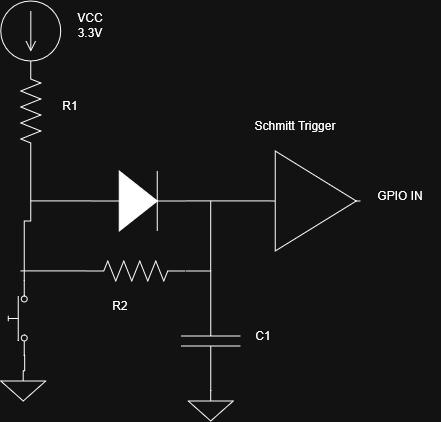

Revision
Decided to not use the Schmitt trigegger debouncing circuit. It would take up too much space physically on the board. I need to keep components down to actually place all the components in the space needed.
Button De-bounce Circuit — Design Notes
Key constraint: ESP32-S3 has no Schmitt trigger on its GPIOs
The ESP32 S3 chip family doesn't get hysteresis-enabled inputs. Without hysteresis, a slow, noisy RC-filtered edge can cause the input to chatter as it crosses the switching threshold, since there's nothing to "lock in" a clean high/low decision.
ESP32 S3 Datasheet Constants
| Parameter | Description | Value |
| VDD | Supply Voltage | 3.3 V |
| VIH | High Level Input Voltage (VDD * 0.75) | 2.4754 V |
| VIL | Low Level Input Voltage (VDD * 0.25) | 0.825 V |
| R PU | Internal Weak Pull Up Resistor | 45 kOhms |
Schmitt Trigger (74HC14)
| Parameter | Description | Value |
| V Hth | High Threshold @ 3.3V | 1.815 |
| V Lth | Low Threshold | 0.4 |
RC Time Constant
Core Formula
\(t = -RC \ln\left(1 - \frac{V_{th}}{V_{DD}}\right)\)
If we go with a 10k Resistor as R1 and R2 we would expect 330uA of current through our pull up resistor to the trigger. I want to shoot for a time constant of 15ms.
Choosing a value of 1.5uF we would get a time constant of 12ms.
Schematic
Asymmetric fast-charge/slow-discharge circuit. Diode + R1 charge C1 quickly on release (R1 doesn't factor into debounce timing at all). Switch discharges C1 through R2 alone on press — R2 + C1 are what actually set the ~12ms debounce time constant.

Final Values
- R1 = 10k (external) — chosen over the internal 45kΩ pull-up. Internal would save power (~73µA vs 330µA per button) but R1 sets the release-side response time via the diode charge path, and 45kΩ would roughly quadruple that lag — not worth it for a responsive game controller.
- R2 = 10k
- C1 = 1.5µF — gives a 12ms time constant at the typical VHth (1.815V)
- No firmware debounce backstop — hardware-only, by choice.
Known risk — accepted
74HC14 thresholds vary meaningfully chip-to-chip (datasheet only guarantees VT+/VT− within 20–70% of VCC, not a tight typical value). Real range across that guaranteed spec:
- Worst case (low VT+, ~0.66V): ~3.35ms
- Typical (calculated, 1.815V): ~12ms
- Best case (high VT+, ~2.31V): ~18ms
Decision: accept the risk rather than over-design for the worst case. Have real hardware + a scope on hand — plan is to measure actual chips once in hand rather than guess. If real parts land on the low end and cause missed debounces, firmware backstop remains a cheap, available fallback (not built in now, but not hard to add later if needed).